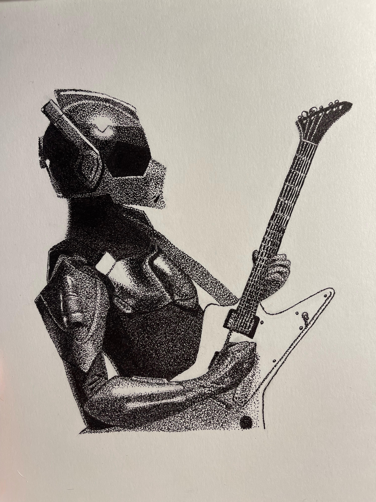
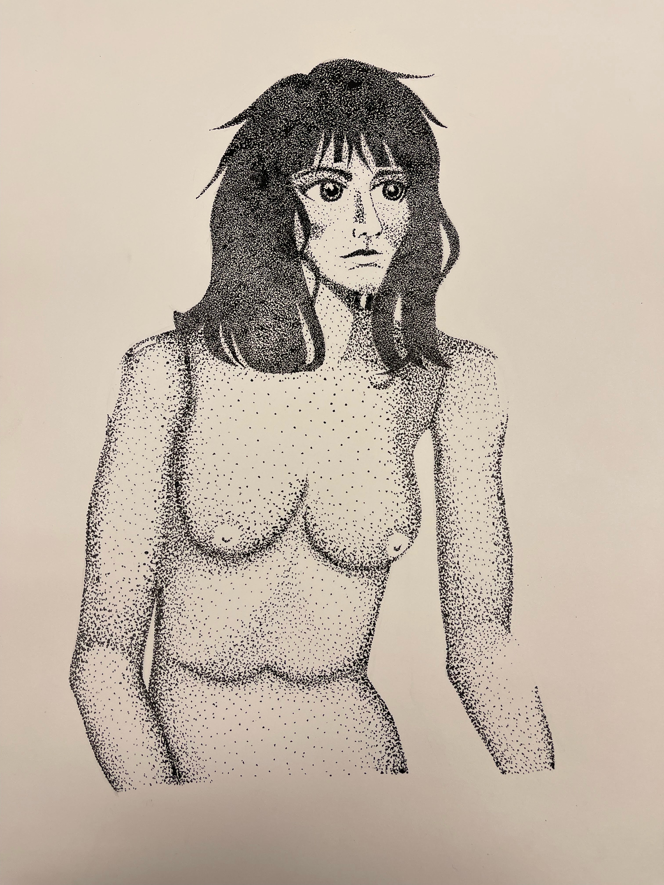

about
portfolio
contact
portfolio



![Photo of a Fast Fashion Inforgraphic made digitally through Adobe Illustrator. In it is a rectangular vertical design that consists of the title 'Fast Fashion, the Real Bagain' on the top left corner, with 'Fast Fashion' being in black and 'the Real Bargain' being in red. Below is the black text 'Fast Fashion began during the 1980s, and as technology advanced overtime, so did the speed and efficiency of garment production. Fast Fashion is not only destroying the environment, but it is also affecting people who work in garment sweatshops'. Below that is the text 'The average employee works 40 hours per week, while the average sweatshop employee works 100 hours per week'. Below that is the text 'Percentage of Men and Women In the Sweat Shop Industry for garments' which is 20% Men and 80% Women. To the right of that is the text '2nd Biggest Polluter in the world'. Below that is the text '70-100 million trees taken down annually to produce Cellulose Farbics' and to the left of that is the text '35% of microplastics that enter waterways come from synthetic fibers'.
title=](media/ff.PNG)